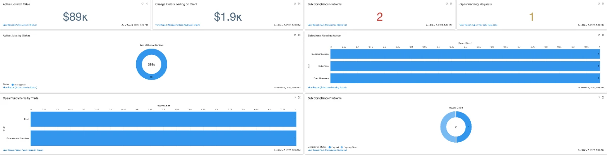

For contractors already on Salesforce
Run your jobs in Salesforce without hiring an admin
Jobs, change orders, selections, punch lists, warranty requests and sub insurance tracking, set up in your Salesforce and ready to use. Your team works in one place, and the numbers add themselves up.
Works with Salesforce Pro Suite, Enterprise and higher.

What's inside
Six parts that work together
Jobs
Client, job site, status, contract and schedule. Approved change orders, current contract, cost budget, projected margin and projected finish date total themselves.
Change orders
Numbered automatically. Price, your cost, margin and days added. Approval needs a signer's name, and once approved the price and scope are locked.
Selections
Every client choice against its allowance, with a decision deadline and an order-by date from the lead time. Flags Decision Overdue, Order Now and Over Allowance.
Punch list
Items by room and trade, assigned to a sub, with due dates and an overdue flag. The completed date fills in when you mark it done.
Warranty requests
Homeowner service requests after closing, tied to the job. Priority, status, who's assigned, repair cost and days open.
Sub compliance
Insurance certificates, licenses, W-9s and lien waivers for every sub. Each one shows Current, Expiring Soon or Expired.
See it
The numbers on every job, without a spreadsheet

Automation
The follow-ups happen on their own
- Every morning, a task lands on your list when a sub's insurance or license expires in 30 days, in 7 days, or today.
- An Emergency warranty request creates a high-priority task due the same day.
- Change order dates fill in when you send one and when the client approves it.
- An approved change order can't be quietly edited. A new change goes on a new change order.
- Selections warn you when a decision is late, when it's time to order, and when the pick is over allowance.
- Job totals update the moment a change order, selection or punch item changes.
Homeowner portal
Give clients a login instead of another phone call
Homeowners sign in to see their own job: status, change orders, selections and the punch list. After closing they submit warranty requests there, and you see them right away in Salesforce.
They only ever see their own project. Your costs, margins and other clients stay hidden.
How it works
From demo to running jobs
Demo
A short walk-through on a sample job, so you can see if it fits how you work.
Setup
Installed in your Salesforce and set up with your job types, trades and statuses.
Your data
Current jobs, subs and certificates brought in, so day one isn't a blank screen.
Training
Your team learns it on their own jobs, with ongoing help available if you want it.
Questions
FAQ
Do I need to already have Salesforce?
Yes. This is set up inside your own Salesforce, on Pro Suite, Enterprise or higher. If you're not on Salesforce yet, ask in the demo and we'll talk it through honestly.
Does it replace QuickBooks?
No. It runs the job side: contracts, change orders, selections, punch lists, warranty and sub paperwork. Your accounting stays where it is.
Can we change it?
Yes. It's built with standard Salesforce objects, fields and flows, so your admin, or we, can add fields, change picklists and adjust the automation.
We use your spreadsheets now. What happens to that data?
The setup uses the same fields as the OrganizedOpsKits spreadsheets, so your jobs, change orders and subs come over cleanly.
Is this made by Salesforce?
No. It's an independent setup built on the Salesforce platform. Salesforce is a trademark of Salesforce, Inc.
See it on a real job
Book a demo
Send a note with your company name, how many people use Salesforce, and which edition you're on. You'll get a time for a short walk-through.
Email to book a demo